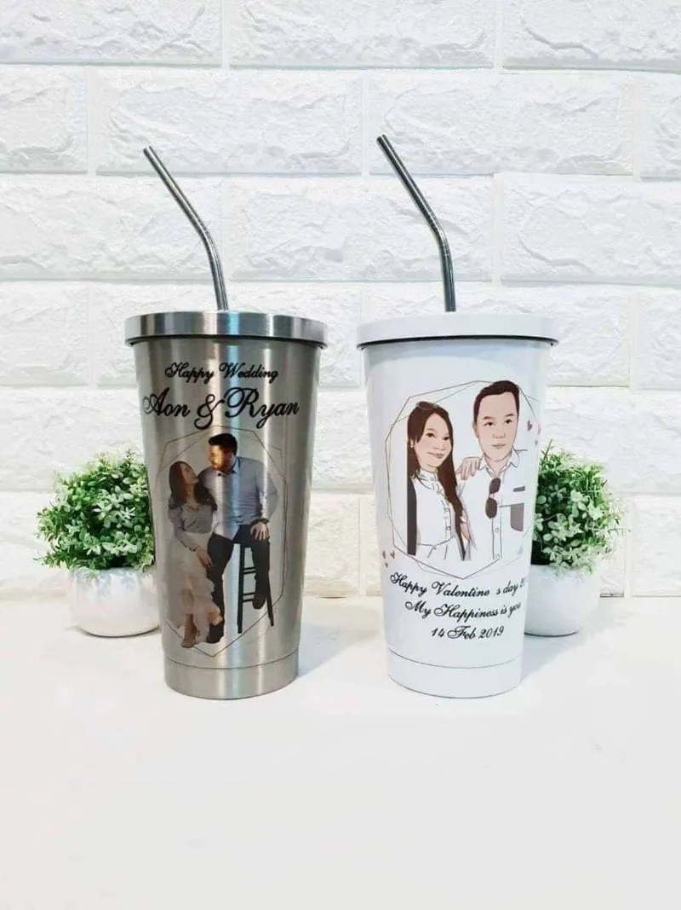

ของขวัญแต่งงาน 2026: 6 ไอเดียซึ้งใจคู่บ่าวสาว พร้อมคำอวยพร 10 แบบ
ได้การ์ดเชิญงานแต่งทีไร คำถามเดิมก็กลับมาทุกที — ของขวัญแต่งงานให้อะไรดีที่ไม่ใช่แค่ซองเงิน? ของขวัญที่คู่บ่าวสาวจำได้นานที่สุดคือของที่ "มีเรื่องราวของเขาสองคน" และได้ใช้จริงในบ้านใหม่ บทความนี้รวม 6 ไอเดียจากประสบการณ์ผลิตของขวัญแต่งงานจริงหลายร้อยชิ้นของร้าน พร้อมคำอวยพรเขียนการ์ดให้เสร็จสรรพค่ะ
1. ผ้าห่มสกรีนรูปพรีเวดดิ้ง — ของขวัญชิ้นใหญ่ที่ใช้ด้วยกันทุกคืน

ไอเดียที่ว้าวที่สุดสำหรับงานแต่งคือผ้าห่มสกรีนรูปพรีเวดดิ้งของคู่บ่าวสาว ใส่ชื่อทั้งสองคนและวันแต่งงานแบบ Save the Date ลงไปเต็มผืน เป็นของขวัญที่เขาได้ใช้ด้วยกันจริงทุกคืนในบ้านใหม่ ผ้านาโนสเปนเด็กซ์นุ่ม ซักเครื่องได้ และมาพร้อมกล่องของขวัญกับการ์ดพร้อมมอบในงานทันที ขนาดแนะนำคือ XL 140×170 ซม. ห่มได้สองคน ราคา 1,590 บาท (เริ่มต้น 690 บาท)
2. หมอนสกรีนรูปคู่บ่าวสาว — คู่กันบนโซฟาบ้านใหม่

หมอนอิงสกรีนรูปคู่บ่าวสาวเป็นของขวัญที่สั่งง่าย งบไม่บาน และดูตั้งใจมาก เริ่มเพียง 399 บาท เคล็ดลับคือสั่งเป็น "คู่" สองใบ — ใบละรูป หรือรูปเดียวกันคนละขนาด วางคู่กันบนโซฟาหรือเตียงในบ้านใหม่สวยมาก ขนาด 15×15 นิ้ว มีโปรสั่ง 2 ใบเหลือใบละ 350 บาทพอดีเลยค่ะ
3. แก้วคู่สกรีนรูป — เช้านี้กาแฟของเราสองคน

เซ็ตแก้วคู่สกรีนรูปเป็นของขวัญแต่งงานยอดนิยมตลอดกาล เลือกได้ทั้งแก้วมัคคู่ (ใบละ 200 บาท) สำหรับกาแฟยามเช้า หรือทัมเบลอร์ทรงสตาร์บัคสีเงิน-ขาวอย่างละใบ (690 บาท ฟรีหลอดสแตนเลส) สกรีนภาพวาดการ์ตูนของทั้งคู่พร้อมชื่อและวันแต่งงาน เราออกแบบและวาดภาพให้ฟรีค่ะ
4. กรอบรูปภาพวาดวันแต่งงาน
อยากให้ของที่ตั้งโชว์ในงานเลยก็ได้ — กรอบรูปภาพวาดการ์ตูนของคู่บ่าวสาวในชุดแต่งงาน ใส่พื้นหลังสถานที่จัดงานหรือสถานที่ที่ทั้งคู่เจอกันครั้งแรก พร้อมชื่อและวันที่ เป็นชิ้นที่มักถูกตั้งไว้หน้างานต้อนรับแขก แล้วย้ายไปอยู่กลางบ้านใหม่ต่อ ส่งรูปมาประเมินราคาฟรีทางไลน์
5. ชุดเครื่องนอนและของแต่งบ้าน
สายคลาสสิกที่ไม่มีวันผิด — ชุดเครื่องนอนดี ๆ สักชุด โคมไฟหัวเตียง หรือนาฬิกาแขวนสวย ๆ สำหรับบ้านใหม่ ข้อควรระวังคือต้องรู้ขนาดเตียงและสไตล์การแต่งบ้านของทั้งคู่ก่อน ไม่งั้นอาจกลายเป็นของเก็บในตู้ ถ้าไม่แน่ใจสไตล์ แนะนำกลับไปข้อ 1-4 ที่ใส่รูปของเขาเองลงไป ยังไงก็ไม่มีคำว่าผิดพลาดค่ะ
6. กิฟต์วอยเชอร์ฮันนีมูน
ถ้างบถึงและสนิทกับคู่บ่าวสาวมาก วอยเชอร์ที่พักหรือร้านอาหารดี ๆ สำหรับทริปฮันนีมูนคือของขวัญที่ให้ "ประสบการณ์" แอบดูจากโพสต์ของทั้งคู่ว่าอยากไปเที่ยวไหน แล้วให้ตรงจุด ยิ่งถ้ารวมเงินกับกลุ่มเพื่อนก็ได้วอยเชอร์ชิ้นใหญ่ที่เขาจำไปตลอดชีวิต
คำอวยพรงานแต่ง 10 แบบ — เขียนการ์ดหรือสกรีนลงของขวัญ
- ขอให้รักกันยาวนาน ถือไม้เท้ายอดทองกระบองยอดเพชร
- ยินดีกับว่าที่คุณพ่อคุณแม่บ้านหลังใหม่ ขอให้มีแต่เสียงหัวเราะ
- Happy Wedding Day ขอให้ความรักหวานชื่นยิ่งกว่าวันแรกที่เจอกัน
- ขอให้เป็นคู่คิดคู่ใจ ร่วมทุกข์ร่วมสุขกันตลอดไป
- รักกันมาก ๆ ทะเลาะกันน้อย ๆ มีเรื่องดี ๆ เข้ามาทุกวัน
- จากวันที่เป็นแฟน สู่วันที่เป็นครอบครัว ยินดีด้วยนะ
- ขอให้ชีวิตคู่ราบรื่น เงินทองไหลมาเทมา
- สองมือที่จับกันวันนี้ ขอให้ไม่ปล่อยกันตลอดไป
- ขอให้บ้านหลังใหม่เต็มไปด้วยความรักและความอบอุ่น
- ยินดีกับรักที่ลงตัว ขอให้มีเจ้าตัวน้อยมาเติมเต็มเร็ว ๆ นี้
สรุป — ของขวัญแต่งงานที่ดี ไม่ต้องแพงแต่ต้อง "เป็นของเขาสองคน"
หลักการเดียวที่ใช้ได้เสมอ: ของขวัญที่มีรูป ชื่อ และวันที่ของคู่บ่าวสาวจะพิเศษกว่าของราคาแพงที่ใครก็ซื้อได้เสมอ ร้านอุ่นไอรักออกแบบและผลิตเองทุกขั้นตอน ส่งแบบให้ดูก่อนผลิต เสร็จใน 3–4 วัน แค่มีรูปพรีเวดดิ้งหนึ่งรูปก็เริ่มได้เลยค่ะ
ส่งรูปคู่บ่าวสาวมาทาง LINE ให้เราทำแบบให้ดูฟรี
บอกวันงาน เดี๋ยวทีมงานจัดคิวผลิตให้ทันแน่นอนค่ะ
แอด LINE @aunirakคำถามที่พบบ่อยเรื่องของขวัญแต่งงาน
ของขวัญแต่งงานควรให้อะไรดี
ของที่คู่บ่าวสาวใช้ได้จริงในบ้านใหม่และมีความหมายเฉพาะคู่ เช่น ผ้าห่มสกรีนรูปพรีเวดดิ้ง หมอนรูปคู่ แก้วคู่ หรือกรอบรูปภาพวาด เก็บเป็นที่ระลึกได้ตลอดชีวิตคู่ค่ะ
ใช้รูปพรีเวดดิ้งทำของขวัญได้ไหม
ได้ค่ะ ขอรูปจากคู่บ่าวสาวหรือเซฟจากโพสต์ประชาสัมพันธ์งานแต่ง แล้วส่งมาทางไลน์ เราออกแบบใส่ชื่อคู่และวันแต่งงานให้ ส่งแบบให้ดูก่อนผลิตค่ะ
ควรสั่งล่วงหน้ากี่วัน
อย่างน้อย 5–7 วันก่อนวันงาน (ผลิต 3–4 วันหลังยืนยันแบบ บวกจัดส่ง) งานด่วนทักไลน์มาคุยก่อนได้ค่ะ
อ่านต่อ / สินค้าที่เกี่ยวข้อง
บทความ: ของขวัญวันเกษียณ + คำอวยพร 20 แบบ
บทความ: ของขวัญรับปริญญา ไม่ซ้ำใคร
ผ้าห่มสกรีนรูป เริ่ม 690.- · หมอนอิงสกรีนรูป เริ่ม 399.- · แก้วสกรีน เริ่ม 200.- · กรอบรูปการ์ตูน